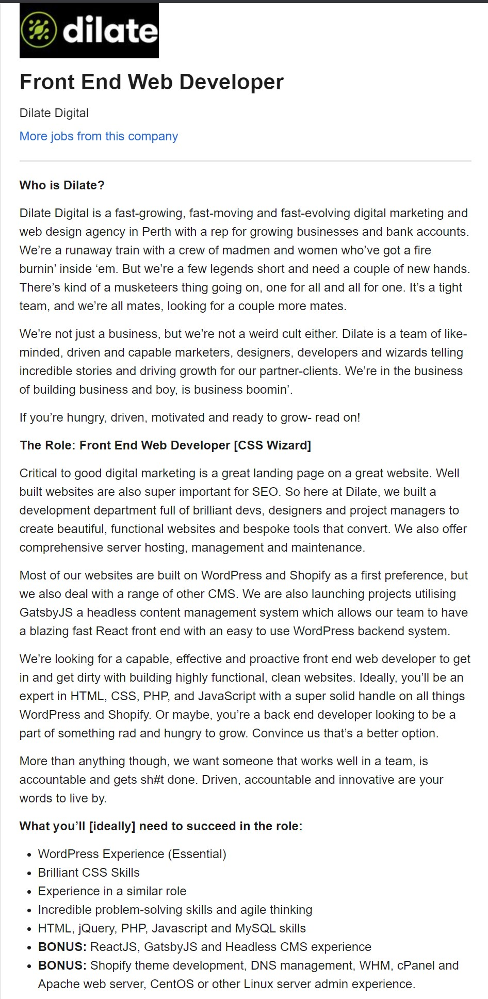
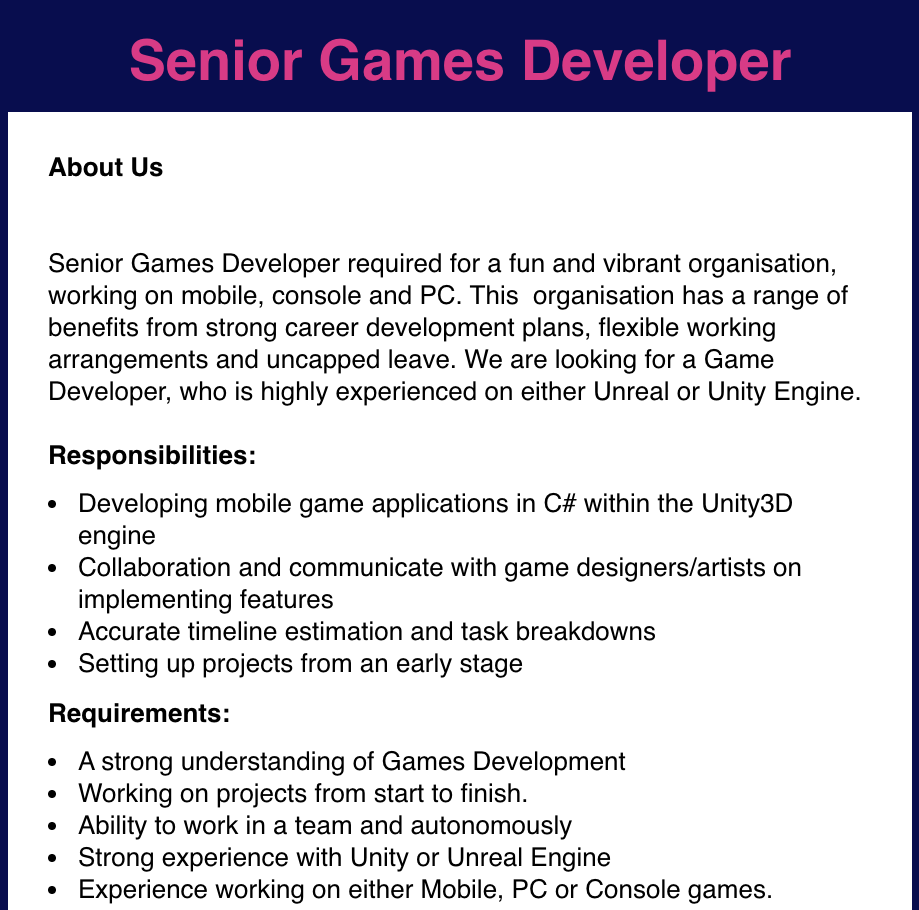

Brent Kimm

My ideal job is in Application Development with React Native, and I would be
classified as a .NET Developer. According to the Burning Glass data, the demand
for this role is high as it is ranked at #3, this has reinforced my desire to
explore this role to a greater extent. I feel as though I already possess the
general skills required for this role. I am very interested in my brief studies
with IT-related skills and I think a career in this field would be a good fit
for me.
Leonard McDonald

My ideal job requires IT skills that
I hadn’t considered before researching the burning glass technologies data and
talking among my team members, some of these skills require only the basic use
and understanding, i.e. SQL. I had originally researched a career which would
maintain my interest and allow consistent learning and creativity, this ideal
job has not changed but with the burning glass data I have gained an idea of the
technologies businesses find useful and I will use this experience to continue
to look towards IT predictions.
Lochlann Keenan Kelli

So far, my ideal job has not
changed. This is because I am currently focusing on a job which I feel is
achievable within my skill sets. As I start to progress through the course my
ideal job will most likely change but right now, I would like to aim for what I
feel most comfortable with and along the way find whether or not I change my
goal. I would like to take my IT career in different stages. A quick search of
Field Technician Jobs on Seek.com
shows 3,582 jobs availabilities (17th Oct 2020)
Michael Heaney

There are two ideal jobs that take my
interest. First is in web development which ranks at #15 in the burning glass
technologies data, and the second is graphic design ranking at #2. Both of these
jobs have similar skill requirements yet don’t directly link or overlap. As it
stands after more research, I will need to expand my current skillset to make
these ideal jobs more achievable, but my ideal jobs have not changed.
Steven Holman

I do not believe that my ideal job has
changed at all. Being a .NET developer has been a goal of mine for a long time
and is a field that I already have experience with. I previously understood the
skills required to perform this job and am trying to gain as much knowledge
about it to start my career in this field.
Thomas Lewis

My Ideal Job is the role of (Metagames
system programmer) test analysis, or in other words, quality assurance in the
video game industry. Having considered the presented Burning Glass Technology’s
data my consideration of an ideal job has not been reconsidered. I reason that I
will require branching into some higher demand skills primarily communication &
further exploration of JavaScript.